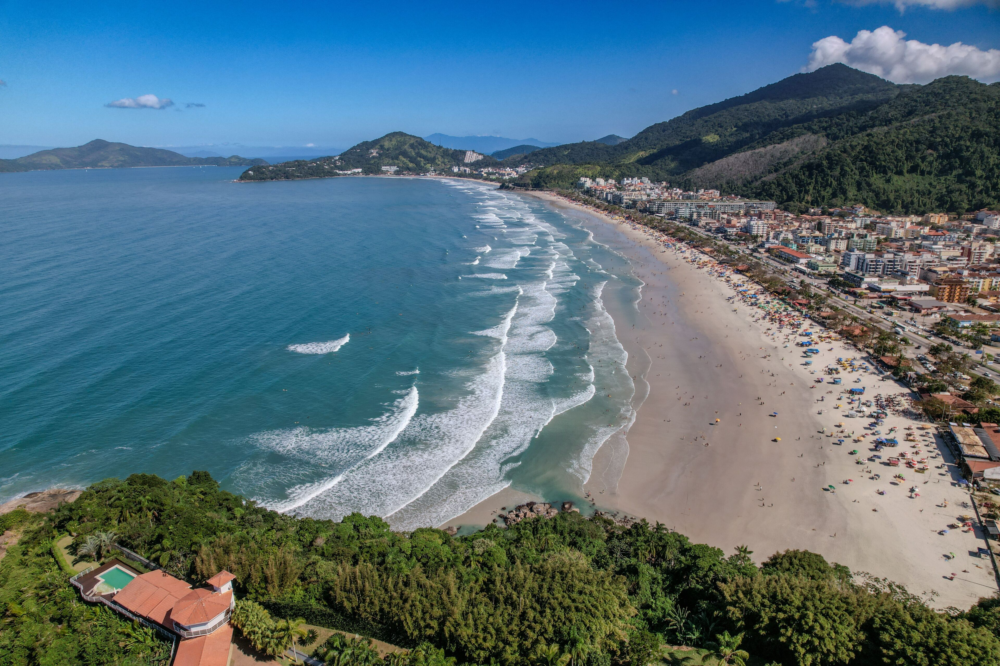
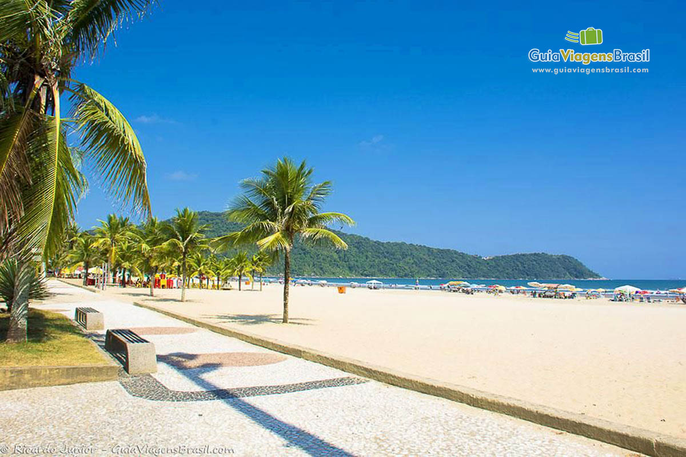
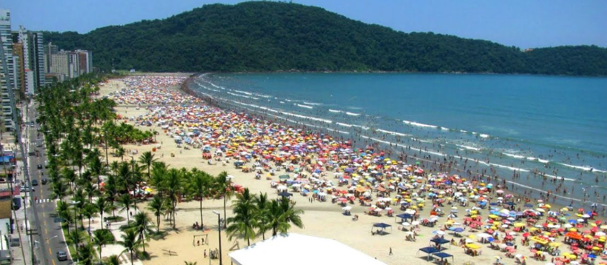

PRAIA GRANDE
História de Praia Grande
A história de Praia Grande começa ligada à ocupação do litoral paulista durante o período colonial. A região fazia parte do território de São Vicente, considerada a primeira vila do Brasil, fundada em 1532.
Durante muitos anos, Praia Grande era apenas uma área de passagem, com praias extensas e pouco desenvolvimento. A partir do século XX, especialmente nas décadas de 1960 e 1970, começou a crescer como destino turístico, impulsionada pela melhoria das rodovias e pelo aumento do acesso da população ao litoral.
Em 1967, Praia Grande se tornou oficialmente um município independente. Desde então, passou por um crescimento acelerado, tornando-se uma das cidades mais procuradas do litoral de São Paulo.
Curiosidades
- Praia Grande possui uma das maiores faixas contínuas de praia do Brasil, com cerca de 22,5 km de extensão.
- É uma das cidades que mais crescem no litoral paulista, com muitos prédios e infraestrutura moderna.
- A cidade tem uma das maiores ciclovias à beira-mar do país.
- É conhecida por ter um dos melhores sistemas de monitoramento e segurança nas praias.
- Recebe milhões de turistas todos os anos, principalmente no verão.
Pontos Turísticos
Praias
- Praia do Canto do Forte
- Praia da Guilhermina
- Praia da Aviação
- Praia da Vila Tupi
- Praia do Caiçara
Outros locais importantes
- Forte de Itaipu – Área histórica e militar com vista incrível (acesso controlado).
- Portinho – Lugar tranquilo para passeios, esportes e lazer em família.
- Parque Leopoldo Estásio Vanderlinde – Área verde conhecida como Parque da Cidade.
- Feirinha de Artesanato da Guilhermina – Ótima para compras e comida típica.


